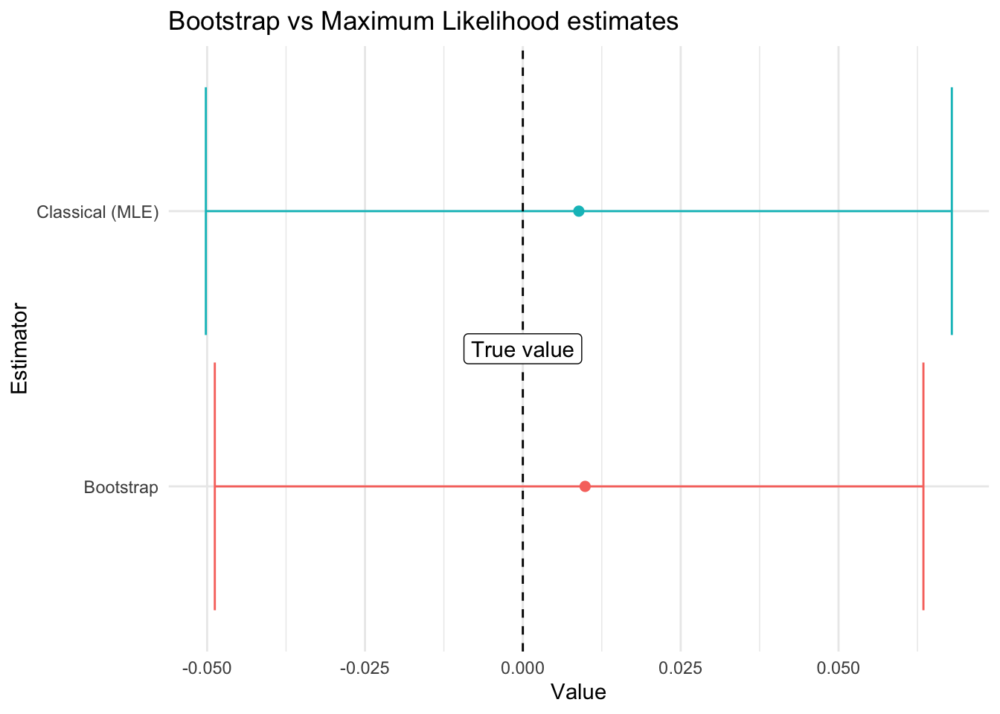

pacman::p_load(survey, surveybootstrap, svrep, matrixStats, modelsummary)Bootstrapping a survey regression
R
bootstrap
statistical-inference
survey analysis
survey
Abstract
In this entry I discuss how to estimate regression coefficients using bootstrapped samples. This allows to calculate regressions even for cases where the survey function is not available.
Bootstrap 101
The main idea behind bootstrap is that resampling the random sample allows us to generate replicates of the sampling process itself. Using these re-sampled data, we can generate our desired estimators. These estimators will be asymptotically equivalent to the desired quantities.
Bootstraping a mean
As an example, consider a random sample of n = 1000 samples from a \(Normal(0,1)\) distribution.
samples <- rnorm(1000)One can estimate the mean classicaly with \(\bar{x} = \frac{1}{n}\sum_{i=1}^n x_i\):
mean(samples)[1] 0.008868099The confidence intervals are given by:
t.test(samples)$conf.int[1] -0.05020360 0.06793979
attr(,"conf.level")
[1] 0.95The bootstrap estimate relies on going over several samples and calculating the mean for each of the resamples:
resample_means <- rep(NA, 1000) #Save the mean of the re-samples
for (i in 1:1000){
resample <- sample(samples, size = 1000, replace = TRUE)
resample_means[i] <- mean(resample)
}
#Bootstrap estimate:
mean(resample_means)[1] 0.009863313The quantiles are calculated in a similar fashion:
#Bootstrap estimate:
quantile(resample_means, c(0.025, 0.975)) 2.5% 97.5%
-0.04878298 0.06344128 These are excelent estimates of the quantity of interest!

Generating bootstrap samples for surveys
There are already pre-programmed functions in the survey package that allow users to calculate some quantities of interest via bootstrap. In this example, we’ll go through the first part of the survey example vignette but with bootstrap. We’ll load the data and setup the survey design, closely following the vignette:
library(survey)
data(api)
clus1 <- svydesign(id = ~dnum, weights = ~pw, data = apiclus1, fpc = ~fpc)Then, we’ll estimate the mean:
svymean(~api00, clus1) mean SE
api00 644.17 23.542To change into bootstrap mode one has only to replicate the design
boot_clus1 <- as_bootstrap_design(clus1, type = "Rao-Wu-Yue-Beaumont",
replicates = 1000)
svymean(~api00, boot_clus1) #Mean but now using 500 re-samples mean SE
api00 644.17 22.324Notice that we had to use the design to generate the replicates. This is an important thing to keep in mind as for complex surveys one cannot simply resample without considering the design (see this review).
Playing with the bootstrapped sample
Now, what happens if we actually need to obtain the replicates (and use them!). For example, when implementing a model that is not already pre-programmed as part of the survey package. In that case, we’ll need to use surveybootstrap and apply our model to the different estimates. As an example, consider replicating the following linear regression model:
regmodel <- svyglm(api00 ~ ell + meals, design = clus1)
#Create regression table
regmodel |>
modelsummary(estimate = "{estimate} [{conf.low}, {conf.high}]",
statistic = NULL, conf_level = 0.95,
gof_omit = c("IC|R|L|N|F"),
title = "Classical coefficient estimators")| (1) | |
|---|---|
| (Intercept) | 817.182 [776.502, 857.863] |
| ell | -0.509 [-1.219, 0.201] |
| meals | -3.146 [-3.803, -2.488] |
Of course, one way to do that would be via the survey replicates:
regmodel2 <- svyglm(api00 ~ ell + meals, design = boot_clus1)
#Create regression table
regmodel2 |>
modelsummary(estimate = "{estimate} [{conf.low}, {conf.high}]",
statistic = NULL, conf_level = 0.95,
gof_omit = c("IC|R|L|N|F"),
title = "Bootstrapped coefficient estimators")| (1) | |
|---|---|
| (Intercept) | 817.182 [774.732, 859.632] |
| ell | -0.509 [-1.373, 0.355] |
| meals | -3.146 [-3.975, -2.316] |
The surveybootstrap package allows us to obtain a list of data.frames each of them representing the bootstrapped sample.
#We'll create 1000 replicates (probably should do more for your analysis)
replicates <- srs.bootstrap.sample(clus1, num.reps = 1000)We then loop through each of the estimates and compute the variables of interest. In this case, we’ll compute and save the coefficients of the regression:
coefficients <- matrix(NA, nrow = length(replicates), ncol = 3)
for (i in 1:length(replicates)){
resampled_data <- apiclus1[replicates[[i]]$index, ]
model <- lm(api00 ~ ell + meals, data = resampled_data,
weights = resampled_data$pw*replicates[[i]]$weight.scale)
coefficients[i,] <- coef(model)
}Finally we aggregate the data:
data.frame("estimates" = coefficients |> colMeans(),
"sd" = coefficients |> colSds(),
"lower_ci" = coefficients |> colQuantiles(probs = 0.025),
"upper_ci" = coefficients |> colQuantiles(probs = 0.975)) estimates sd lower_ci upper_ci
1 817.1486319 8.772412 800.259685 834.64679677
2 -0.5157284 0.291831 -1.060651 0.05709264
3 -3.1423897 0.197455 -3.536597 -2.74240511And that’s it!
Epilogue
A quick note: percentile estimators of the confidence intervals are highly prevalent in the literature and seem widely accepted within the sciences (at least ecology and epidemiology). Albeit, to my knowledge, there is no final proof that these intervals work as intended. Wu and Rao argue for a different method (the t method). However, Z. Mashreghi et al states: “it is not clear that the other types of bootstrap confidence intervals (percentile or t) could be used with either of these methods since they are based on sampling schemes designed to match the variability of the estimator, but not its distribution”.